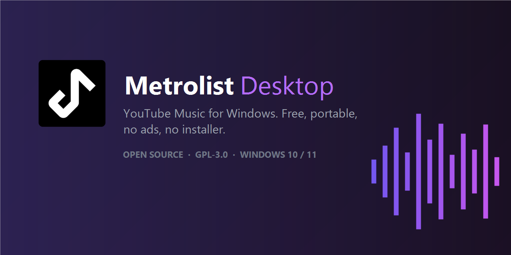

A free, open source YouTube Music client for Windows 10 and 11. Your real library, your real playlists, synced lyrics and offline downloads. No ads, no installer, no telemetry.
Download for WindowsYouTube ships no desktop app for YouTube Music, and a browser tab is not a music player. Metrolist Desktop is a native Windows application that signs in to your own account and talks to the same API the mobile app uses. It is not a wrapper around the website and not a repackaged Android build: it has its own player, database and sync layer.

Liked songs, albums, artists and playlists sync both ways. Edits you make on the desktop show up in YouTube Music.
Bundled VLC engine, gapless queue, crossfade, 10-band equalizer, playback speed, sleep timer, skip silence, volume normalization.
Five providers chained together, so a track one source misses is usually covered by the next.
Keep tracks offline, plus loudness-normalized MP3 export for a car stereo or a USB stick.
Home feed, Explore, charts, moods and genres, radio, auto-queue, podcasts, and search with filters.
Media keys, system tray mini player, Discord Rich Presence, Last.fm scrobbling, Listen Together rooms, Shazam recognition.
Metrolist-X.Y.Z-portable.zip from
the latest release.C:\Metrolist.Metrolist.exe and sign in with your browser.There is nothing else to install. VLC, ffmpeg and the Java runtime all ship inside the archive.
Do not extract into OneDrive, Dropbox or a synced Desktop folder. Metrolist keeps its database, login and downloads next to the exe, and a sync client that reopens those files mid-write will lock or corrupt them.
No. YouTube ships mobile apps and the web player, nothing native for Windows. Metrolist Desktop is an independent open source client.
Yes, free and open source under GPL-3.0. No paid tier, no account of its own, no telemetry.
No, but it signs in to whichever account you give it, so a Premium account keeps its benefits.
No. Both are bundled in the download, along with ffmpeg for exporting.
The code is Compose Desktop on the JVM, so it is portable in principle, but only Windows builds are published today.
Delete the folder. Everything it wrote lives inside it.